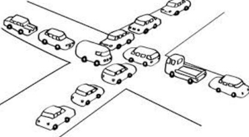
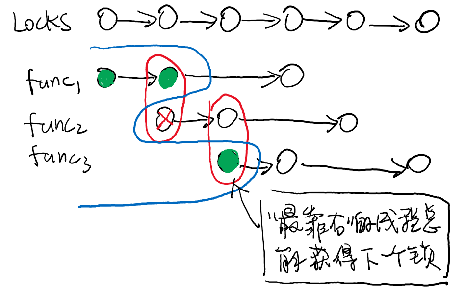
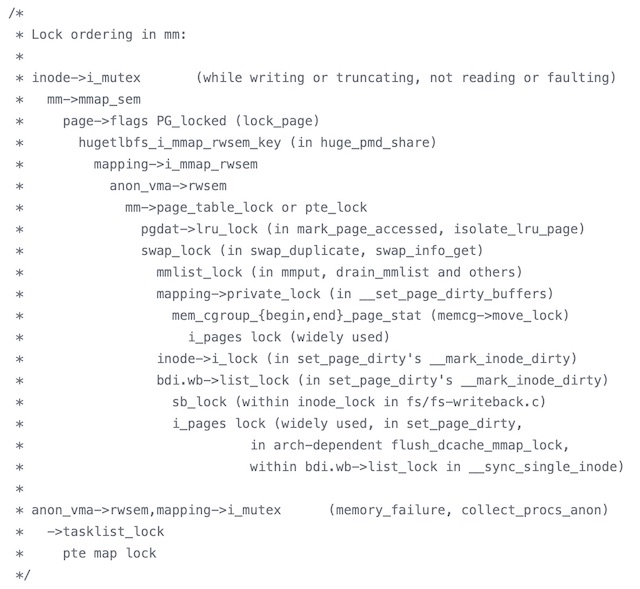
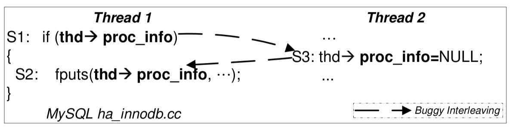
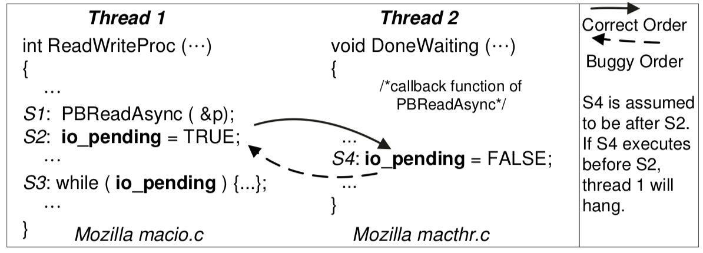
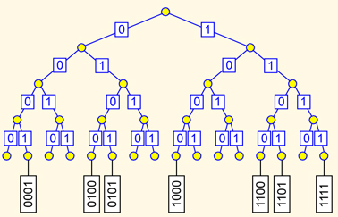

public: True class: center, middle # [C] 并发Bugs 蒋炎岩 <jyy@nju.edu.cn> 南京大学计算机软件研究所 --- # 本讲概述 > 引子：同步、互斥的时候我们已经讲了很多“不对”的案例：哲♂学家死锁；join失败；条件变量signal错线程；…… > > * 并发bug有无固定的模式？ > * 我们有没有办法尽可能地找到/避免它们？ ---- * 死锁 (ABBA) * 原子性违反 (ABA) * 顺序违反 (BA) * 数据竞争 --- class: center, middle # 死锁 --- # 死锁 (Deadlock) > A deadlock is a state in which each member of a group is waiting for another member, including itself, to take action, such as sending a message or more commonly releasing a lock. ---- 出现线程“互相等待”的情况 (路口空间 = 资源) .center[] --- # 死锁：为什么会发生？ 假设你的spinlock不小心错误地打开了中断 ---- ```c void normal_code() { spin_lock(&list_lock); spin_lock(&xxx); spin_unlock(&xxx); // ---------+ } // | void interrupt_handler() { // | spin_lock(&list_lock); // <--+ spin_unlock(&list_lock); } ``` --- # 死锁：更常见的情况 你一不留神就忘记了lock order…… * 逻辑读起来没有什么大毛病，但可能同时`move_obj(1, 2)`; `move_obj(2, 1)`…… * ABBA deadlock ---- ```c void move_obj(int i, int j) { spin_lock(&lock[i]); spin_lock(&lock[j]); arr[i] = NULL; arr[j] = arr[i]; spin_unlock(&lock[j]); spin_unlock(&lock[i]); } ``` --- class: center, middle # 避免死锁 --- # 避免死锁：原理 死锁产生的四个条件 ([Edward G. Coffman](https://en.wikipedia.org/wiki/Edward_G._Coffman,_Jr.), 1971): * 互斥：一个资源每次只能被一个进程使用 * 请求与保持：一个进程请求资阻塞时，不释放已获得的资源 * 不剥夺：进程已获得的资源不能强行剥夺 * 循环等待：若干进程之间形成头尾相接的循环等待资源关系 ------ > “理解了死锁的原因，尤其是产生死锁的四个必要条件，就可以最大可能地避免、预防和解除死锁。所以，在系统设计、进程调度等方面注意如何不让这四个必要条件成立，如何确定资源的合理分配算法，避免进程永久占据系统资源。此外，也要防止进程在处于等待状态的情况下占用资源。因此，对资源的分配要给予合理的规划。” -- count: false > ——.red[教科书式的，完全正确的废话] --- # 避免死锁：原理 (cont'd) 避免AA型的死锁 * AA型的死锁非常容易检测，及早报告，及早修复 * [spinlock.c](/static/wiki/os/2019/demos/spinlock.c) (`if (holding(lk)) panic();`) ---- 为了避免ABBA型的死锁 * 任意时刻系统中的锁都是有限的 * 严格按照固定的顺序获得所有锁 (思考题：为什么这正确？) --- # Lock Ordering: 正确性 .center[] --- # Lock Ordering: 应用 Lock Ordering是保证正确性的重要途径 .center[] --- # 在应用Lock Ordering之前 > Textbooks will tell you that if you always lock in the same order, you will never get this kind of deadlock. Practice will tell you that this approach doesn't scale: when I create a new lock, I don't understand enough of the kernel to figure out where in the 5000 lock hierarchy it will fit. > > The best locks are encapsulated: they .blue[*never get exposed in headers*], and are .blue[*never held around calls to non-trivial functions outside the same file*]. You can read through this code and see that it will never deadlock, because it never tries to grab another lock while it has that one. People using your code don't even need to know you are using a lock. --- # 让程序员避免死锁？.red[那就完了] 调试公理：未测代码永远是错的 * .blue[并发那么复杂，程序员哪能充分测试啊……] ---- [lockdep](OS_lockdep): Kernel Lock Validator (since 2.6.17) * 为每一个“lock class”检查(分配一个key) * 每个静态锁都是一个class：key = 地址 * 动态分配的锁，相同initialization site是一个class .green[问题：如何实现key？] * 在运行时观察所有的lock/unlock * lock = push; unlock = pop; .green[堆栈保存在哪里？] * 记录中断(soft/hardirq)/读写信息 --- # lockdep: 死锁检查 * Lock ordering (<math>L_1 \to L_2</math>; <math>L_2 \to L_1</math>) * 每当检测到一对新的<math>L_1 \to L_2</math>时检查 * 配对：禁止lock(A); lock(B); unlock(A); unlock(B) * 没有`pushfcli()`的自旋锁不能在中断中获得 ---- .float-right[<img src="../static/wiki/os/2019/img/observe.jpg" width=150px/>] lockdep在运行时“暗中观察”程序的执行 * “动态程序分析”；“监控” * lockdep是编译在内核代码中的；但我们同样也可以为.red[任何程序]做这样的hacking * instrumentation：在编译时/二进制时插入我们的代码 * hooking：运行时hack lock/unlock函数 --- # Live Lock: 没有实际进展 老总打电话给秘书：“这几天我陪你去北京玩玩，你准备一下” 秘书打电话给老公：“这几天我要和老总去北京开会” 老公打电话给情人：“这几天我老婆不在家，陪我” 情人打电话给辅导学生：“这几天老师有事，停课” 学生打电话给爷爷：“这几天不上课，爷爷你陪我玩” 爷爷给秘书打电话：“北京去不了了，孙子要我陪” 秘书给老公打电话：“老总突然有事不去北京开会了” 老公给情人打电话：“老婆不走了，下次再说” 情人给辅导学生打电话：“这几天照常上课” 学生给爷爷打电话：“555老师说这几天照常上课” 爷爷给秘书打电话：还是去北京吧，你准备准备 --- class: center, middle # 并发bug：不仅是死锁 --- # 程序员：花式犯错 回顾我们实现并发控制的工具 * 互斥锁(lock/unlock) - 原子性 * 条件变量(wait/signal) - 同步 ---- 忘记上锁——原子性违反 (Atomicity Violation, AV) 忘记同步——顺序违反 (Order Violation, OV) ---- >在研究过一堆bug report (Non-deadlock/deadlock): MySQL (14/9), Apache (13/4), Mozilla >(41/16), OpenOffice (6/2): .red[97%的非死锁并发bug都是AV或OV]。 > >Shan Lu, et al. [Learning from mistakes: A comprehensive study on real world concurrency bug characteristics](https://dl.acm.org/citation.cfm?id=1346323). (ASPLOS'08) --- # 原子性违反 (AV) “ABA”——我以为一段代码没啥事呢，但被人强势插入了 * 有时候上锁也不解决问题 ---- .center[] --- # 顺序违反 (OV) “BA”——怎么就没按我预想的顺序来呢？ * 常见的情况：use after free ---- .center[] --- # 关键问题是什么？ 程序员.red[在本地跑了几万次测试，都没发现啥毛病]，结果部署到生产环境里，.red[💥爆炸了] ---- Empirical study给了我们更多有趣的发现： * Almost all (96%) of the examined concurrency bugs are guaranteed to manifest if certain partial order between .blue[*2 threads*] is enforced. * Many (66%) of the examined non-deadlock concurrency bugs’ manifestation involves concurrent accesses to .blue[*only one variable*]. * Almost all (97%) of the examined deadlock bugs involve .blue[*two threads*] circularly waiting for at most two resources. --- class: center, middle # Hacking Time! --- # 枚举线程调度 找并发bug变成了一个搜索问题 * 如何驱动程序按照指定的调度执行？ * 如何在海量的调度里找到可能有bug的那个？ .center[] .center[(0: 线程<math>t_1</math>执行一步；1: 线程<math>t_2</math>执行一步)] --- # 数据竞争(Data Races) AV/OV的一个常见原因 * .blue[两个线程]对.green[同一个共享变量]的.red[非只读并发访问] * ad-hoc synchronization基本都是data races ---- Data races既然那么有害，能不能自动帮我们找出来？ * [静态检查(扫描源代码)](http://theory.stanford.edu/~srirams/papers/cav2007.html) * [动态检查(在内存访问/同步/互斥操作时记录log，然后检查log)](https://dl.acm.org/citation.cfm?id=781528) --- # HB Race Detection 在程序运行过程中增加日志 * t:lock(&lk)/unlock(&lk)/t:read(x)/t:write(x) .center[<img src="../static/wiki/os/2019/img/hb.gif" width=400px/>] --- # 并发Bugs：小结 和bug斗智斗勇：代码 = 武器 * 运行时花式收集log * 在log里花式找bug ---- <del>强势吹一波我们的研究工作</del>